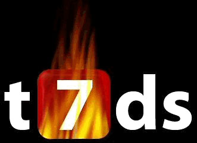

The 7 Deadly Sins
O the 7 deadly sins tenta tornar sua vida mais tranquila no IRC.
Ele possui várias proteções pessoais e comandos facilitados através de menus todos em português.
É um ótimo script tanto para o usuário final, que gosta de escrever colorido e fazer desenhos nos canais, quanto para ops e ircops.

Novidades:
- t7DS v10.0
- t7DS v9.6
- t7DS v9.4
- t7DS v9.4
- mIRC 6.15 em português;
- Atualizações dos .ini automaticamente sem precisar baixar o script inteiro;
- Escrita personalizada: agora você escolhe quais cores e efeitos da sua escrita, sem ficar preso às escritas prontas do script;
- Melhorado tela do Fserver;
- Ajustado titlebar para redes com lusers desabilitado;
- /whowas mostrando todos os resultados (todas as máscaras que o nick usou);
- Desenhos sendo mostrados corretamente.